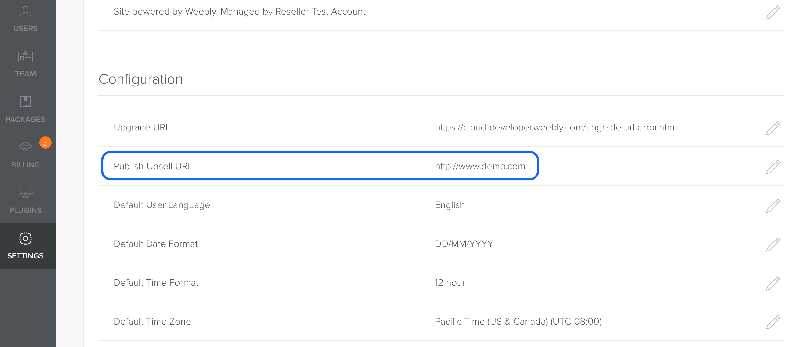

When a user publishes their site, the Weebly Editor displays a modal. You can customize this modal window by supplying a URL to other content.
About the Publish Modal
When a user publishes a site, the Weebly editor displays a publishing modal. It displays a link to the site just published, and often Weebly displays promotional material as well.
Publish modal in the Weebly Editor
You can use this modal window to advertise your own services by setting the publish_upsell_url to a URL where you have content published. That content loads in an iframe (640px W by 200px H) when a site is published. Here’s an example of custom content in the modal (the yellow background is for demonstration purposes only).
Custom content in the Publish modal
Because the site_ID and user_ID are passed into the upsell URL, you can dynamically override the content to display based on the user and site being published.
Clients are accessed using their user_id.
Here’s an example URL in the iframe:
Before you can configure Weebly Cloud to use custom content in the Publish modal, you need to create it on a site that can be accessed. You can set the URL in the Cloud Admin or if you want different content displayed based on the site or user, you can set it dynamically using the Site or Account API.
To set the URL in the Cloud Admin:
Create your custom content at a URL that can be accessed by the modal.
From the Settings page of the Cloud Admin, in the Configuration area, click the Edit icon for the Upsell URL.
Upsell URL on the Settings page in the Cloud Admin
Enter the URL to your custom content.
To set the URL dyanmically using the API:
Use the PATCH request from the Account API if you want all sites for an account to see the same content, or from the Site API if you want content to be based on the site being published.